麻雀集中講座
（未完） とつげき東北
麻雀集中講座：
「リーチのかけ時が難しい」「降りてばかりで全然勝てない」など、色々悩みを寄せられたので、そういった「状況判断」の要所要所を説明することにする。
リーチのかけ時、攻めるか降りるかの判断の基準：
まずは、判断基準がどこにあるかを明らかにする。
よく麻雀雑誌などで、「いつでも攻める気持ちを忘れない」とか「あのハイパイがここまで育ったのだから行くしかない」「最終形だからリーチ」など、極めて原始的で蒙昧な記述を見る。
リーチのかけ時（以下、「リーチ判断」と呼ぶ）や、攻める・降りるの判断（以下、「攻守判断」と呼ぶ）の基準は、そんなところには全くない。
なにより重要なのは得点と順位と局数の判断、次に重要なのは他家の挙動と自分の手牌の判断である。
オーラスのトップならば、ムリしてダントツラスのリーチに対抗して、２位や３位になる危険を冒さなくて良い。
逆に、オーラス４位なのに、降りていたら上がられてしまう。
この記述はおれが色々な所でしてきたことだが、これは何もオーラスに限ったことではなく、東３や、また東２でも非常に重要な判断になる。
また、他家３家が全部つっぱっているようなら、こっちもつっぱっても、自分が振る確率自体はそれほど高くならない。
逆に、他家２家がベタオリしているのに自分だけ立ち向かっていくなら、相当自分の手が高くなければ「無謀」である。
基本的には、今言ったことが全てである。
ポイント１：東１の子での安上がり禁止
まず、東１の子で安上がりをしないこと。
ドラがポンされたり、親が染め手を仕掛けるなど、危険が非常に大きく、かつ素早く上がってそれを回避できるような場合は除く。
また終盤になって、誰からリーチがかかってもおかしくないような緊張した場面で、１鳴きで安上がりテンパイできるような場合も除く。
また、親ならばある程度素早く上がってレンチャンしたいから、あまりムリに手を作る必要はない。
そうでない通常の状態で、例えば２回もポンして２０００点を取りに行ったり、中順以降でピンフのみからリーチすることはまずい。
東１で安上がり（２０００点以下）に向かっても、ある程度以上の実力がある人にとっては、最終的な順位の期待値がほとんど上がらない。理由は以下の通り。
・自分の手が充分に大きくなる可能性を持つのに、それを２０００点などにしてしまうこと自体損失である。
・２０００点のためにリーチをかけるとか、２鳴きするなどして、追っかけが入ると非常に不利な戦いになる。
・例えばたった１０００点を上がっても、残り局数が少なくなる＝試合が偶然に左右されやすくなる ので、それも損失である。
こうした事情から、東１で通常の状態であれば、リャンメン２６００以上のリーチ手、食い仕掛けなら３９００以上、悪い待ちなら５２００以上を狙っていくのが基本である。
ピンフのみになりそうなら、ムリにドラやドラの側の牌を残して、ドラ単騎でもいいからとにかくこの条件を満足する手に向かう。
さもなければ降りる。
ピンフのみとかヒッカケリーのみでリーチして、親に追っかけリーチされてヒヤヒヤした経験は何度もあるでしょう。
もちろん、時には１発ツモや裏などもあるが、長い目で見れば絶対に損なので、東１の子での安手リーチはやめよう。
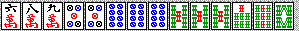
例えば６順目にこのようにテンパイした。ドラは９マンだから、例えば６マンを切ってリーチすれば、７マンペンチャン待ち、リーチドラ１の２６００である。
２６００のリャンメンリーチ手なら先の基準を満たすが、これは悪い待ち。リーチできない。
この手なら、９マンのドラをもう一つ重ねれば５２００以上になるし、５ピンをアンコにしたらサンアンコ。
８マンを引いてもツモりサンアンコにできる。
実戦では、ダマにしていたら８順目に７マンをツモってしまった。
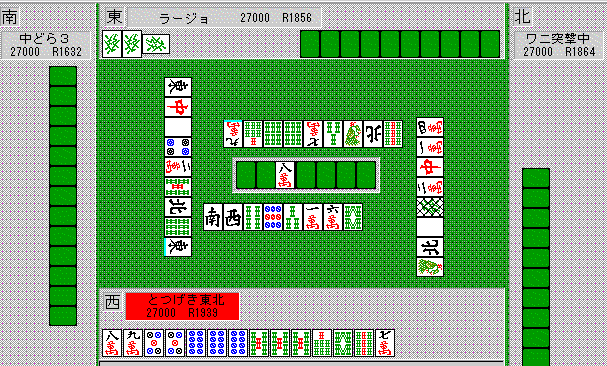
親の手を見て、発ホンイツの手（少なくとも５８００点）っぽいので、これ以上手を伸ばしている余裕がなく、２６００点でツモ上がった。
もしリーチをかけていたらリーチ・ツモ・裏１の符はねで５２００点だったが、全く後悔する場面ではない。
これが例えば３順目に字牌を処理し終わった直後にこのツモだったらどうか？
５ピンを切る。アンコの側にひっつければ変則２～３メン待ちになる。まだまだ手が伸びるわけね。
もう一度書くね。「東１で通常の状態であれば、リャンメン２６００以上のリーチ手、食い仕掛けなら３９００以上、悪い待ちなら５２００以上を狙っていくのが基本」これを忘れずに。
東１、と書いたが、東２でも平場だったら同じだよ。東３などで接戦、ていうような場合は高さより早さが重要になることもあるけど。
そして、どうしても安上がりテンパイにしかならなかった場合はどうするか？
例えば、ドラがヤクハイなのにピンフのみを張ってしまった。または、カンチャンのリーのみ手になってしまった。。
ヤクハイドラが場に枯れている（３枚出ているとか）とか、他家が安い食い仕掛けをしているなら、まあピンフリーチしてもよろしいかな。
でもそうでないなら、ダマで。手替わりで高くなるならそれを目指すし、そうでなければ仕方なく１０００点上がるしかない。
ちなみに、他家からリーチがかかったらテンパイを崩して降りる。
ここが重要ですね。ピンフのみを張っていて他家リーチがかかる。
現物や、まあ安全そうなスジならばツモ切りしてダマで対抗していても良い。
でも、１枚でも無スジを引いたら、さっさと降りてしまうべきです。勝負するならリーチしないと損だし、勝負しないならきちっと降りよう。
ダマで危険牌を２枚も切るなんていうのは愚の骨頂。
ところで、これだと降りてばっかりになる、という人はどうすればいいか？
ハイパイ時点で、しっかり役を見定める練習をしよう。
ドラが字牌だったら、タンヤオを作らない限りシュンツ手だと「ピンフのみ」になりやすいわけで、こういう場合はチートイやリーチドラドラを目指すとか、ムリにでもホンイツにしてドラを使う、といった工夫がいるわけね。
逆にドラが５マンとかだったら、かなりいい形のソーズホンイツが狙えるような手でも、リーチヤクハイドラ１なんかも視野に入れて手を進めるべきだ。
他にも、手がドラ１程度にしかならないのにペンチャンやカンチャン主体で手を進めると、テンパイは早くてもリーチができない、ということにもなるね。自分の手の高さを考え「リーチ条件」に見合うようなメンツ作りをしていこう。
ドラが枯れた場面でのリーのみでも、最低でもリャンメン待ちとか、早い順目での字牌待ちにすること。
追っかけリーチされたときのことを想定しよう。
リーチする場合には、「追っかけ？ おら、いつでも来いや！」と言えるような待ち・高さが必要です。
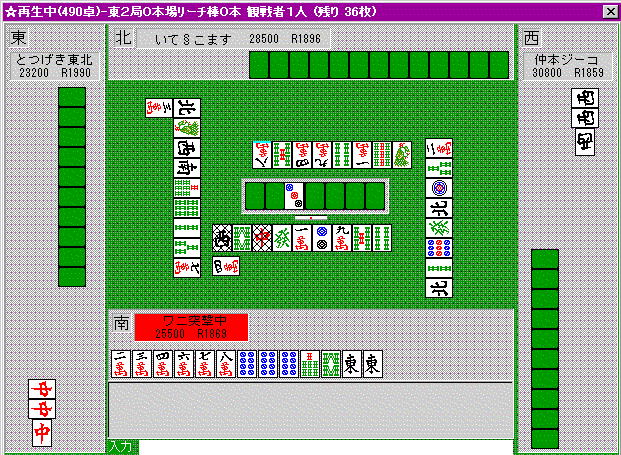
こんなリーチは最悪です(笑)。ちなみに上家のとつは親マンガンリャンメンでテンパイ。
危険な橋を渡って１３００点ではどうにもなりません。東ポンでも１０００点。
リーチ棒を出して危険を抱え込んで３００点増やす意味がわかりません。
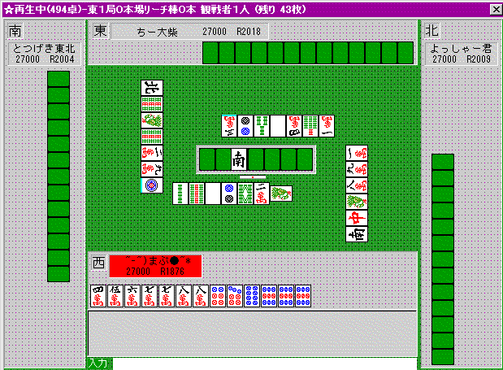
これも厳しい。ドラの所在もわからない段階で１３００点の、それも待ちの悪いリーチはやめよう。
４５マンをつもれば高めイーペーのリャンメンになるしね・・・
ポイント２：１鳴き２０００、２鳴き３９００、３鳴き５２００
食い仕掛けのやりかた。
これもまた、東１とかの子の状況でね。
よく、２鳴きも３鳴きもして１０００点や２０００点を上がる人がいるが、これほど危険なことはない。
リーチされたら祈る以外やることがなくなる。
相手にリーチされて、こっちがテンパイしているとする。ここで、「降りたい」と思う手と、「降りたくない」と思う手があるよね。
例えばピンフのみ１０００点でテンパイしていて、親からリーチがかかった。
こんなもんは追っかけしたら絶対だめ。
「降りたい」状況なわけね。
この「降りたい」状況になっても降りられないようなバカな食い仕掛けはしたらダメということ。
マンガンのホンイツなら、仮にリーチがかかっても「おら、来いや！」て言えるでしょう。だからこの場合、３鳴きしてても平気。
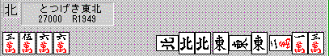
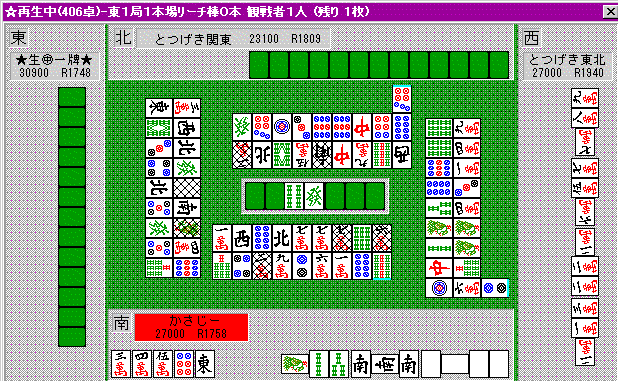
おれのはやりすぎだが(
≧∇≦)ﾌﾞﾊﾊﾊ! それでも、マンガンなら充分勝負になる。
この、南家を見てほしい。ただの白南（２６００点程度）でこんな状況になったらかなり厳しいよね。。
これでトイメンからリーチでもかかろうものなら、完全にお手上げになる。
こういう食い仕掛けはやめよう、１鳴き２０００、２鳴き３９００、３鳴き５２００を守ろう、というのがポイントです。
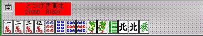
こうしたハイパイで、北のトイツをどうするか？
もし早くの段階に発が重なれば、発トイトイ系で５２００が狙えるね。
でも、ヤクハイがかぶらないと苦しいね。トイトイのみ２６００のために２回も３回もポンするのは割に合わない。
実戦では、ドラが７ソウであったこともあり、「リーチリャンメン２６００」を目指して北をトイツ落とししました。
仮にドラが西とかだったら、「リーチリャンメン２６００」が苦しい手なので、チートイドラドラとかヤクハイホンイツを目指し、６ソウあたりから切るでしょう。
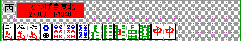
これではどうか？ ドラは５マン。
中をどうするか、だけど、例えば１順目に誰かが中を切ったとき、ポンするのはよくない。
せっかくメンツがきれいな形なので、ここは中をアンコにするか、せめて中のシャンポン待ちリーチに行きたい。
まずは２マンあたりを切っておく。
しばらく進めて、もしメンピンドラ１（３９００以上リーチ手）ができるようなら、既に１枚切れの中のトイツ落としも考えるところ。
中がションパイであれば、リーチ中ドラ１も視野に入れる。
うまい具合に進まないなら中の２枚目をポンして、（他の部分はツモで何とか形を整え）、最低２鳴き目でリャンメンテンパイに持っていく。それ以前にリーチがかかったら降り。
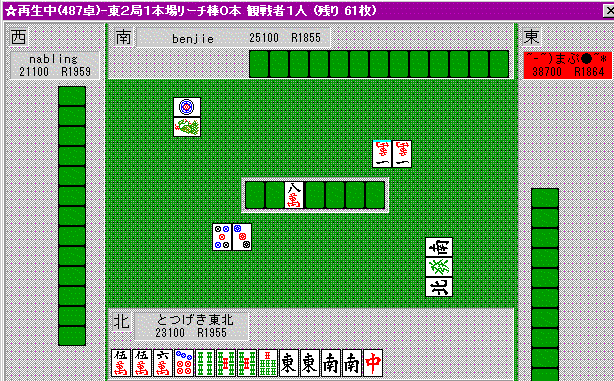
こういう手をどうしましょう。
上ランなんかの他家でよくあるのは、ここで南を「ポン」。東を「ポン」。更に中まで重ねて「ポン」したのに結局役は「東・中」の２０００点、というやつ。
ヤクハイ（や字牌）２個ポンしたのに、ホンイツもトイトイもドラもない、という中途半端なのは絶対やめよう。
ここでおれは、取りあえずオタカゼの南を見送り。東をポンして、ムリヤリホンイツ（マンズ）に持っていった。
これだけの字牌を処理してシュンツ手にするのは大変だし、リーチ東、等の手は作りにくい。
だから、いつでも南を切って降りられるようにしながら仕掛けていった。
マンズに染めたのは、ここから強引にホンイツをやる場合、３鳴きテンパイの可能性もあったからだ。
マンズなら、ドラが使えるために７７００の手が充分狙えるわけだ。
ソウズなどで染めると、３鳴きで３９００、しかもドラつかんで降り・・・という構図が目に浮かぶ(笑)。
もちろんソウズがたくさん来たらソウズ染めにもすることもあるが、その場合、南は「頭」と考えておいた方がいい。
テンパイならまだいいが、３９００の２シャンテンのために２鳴きしてアンパイなし、は最低だ。
ポイント３：上がるべき局面・降りるべき局面を意識して打つ
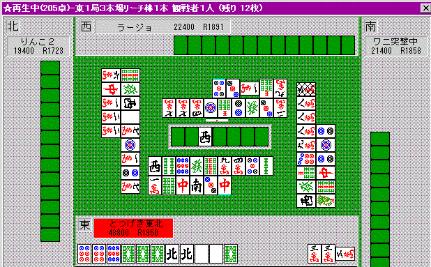
ここで、どうしますか？ まだ東１ですがかなりのダントツトップ。
トイメンがリーチです。自分はトイトイドラ３の１シャンテンですが・・・。
私はここで白のトイツ落としをしてベタオリしました。
攻守判断をするということは、「もし相手に上がられたら」の場合の順位期待値と、勝負して「相手に振ったら」＆「自分が上がったら」の順位期待値の平均（より正確には上がり安さに応じて加重平均）との、どちらが上かを判断するということに他なりません。
まあ、ちょっといいかげんですが、次のように考えるわけです。
「もし相手に上がられたら」・・・マンガンツモだとしても依然、余裕のあるトップを保てます。順位期待値は１．３位くらいかな？（この順位期待値は、正確な得点分布と順位分布のデータがないです。今のところとつの経験で言ってます。）
「もし相手に振ったら」・・・３９００くらいなら平気ですが、ドラドラ隠し持ちも考えられるし、もしマンガンだったら、順位期待値は１．８位とかになるのではないでしょうか？
「もし自分が上がったら」・・・確かに１位はほぼ不動になるでしょう。
この場合、降りて １．３位 を守る方が、攻めて １．８位になるか１．０位になるかに賭けるよりも得だ、というわけです。
しかもシャンポンで待ちが悪いとなると、よりいっそう「１．８位」の方に近づくわけで、やはり降りた方が得策ではないでしょうか？
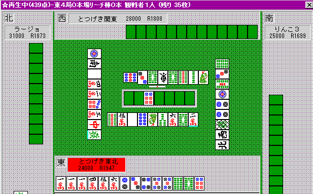
こちらだとどうですか？
もうオーラスです。４位。親なので何とかレンチャンしたい場面で、トイメンからリーチがかかった。
「もし相手に上がられたら」・・・下家が振る場合を除いて４位が確定です。
「相手に振ったら」・・・４位が確定です。
「自分が上がったら」・・・４位どころか、２位や１位も狙えます。
従ってこの場合、「攻める」方が得ですね。
しかもこういう場合は、ツモ切りリーチでいいでしょう。
出上がりの効かない形だし、手替わりを待っているヒマなんて全くなく、とにかく自分が上がらないとほぼ４位になってしまうからです。
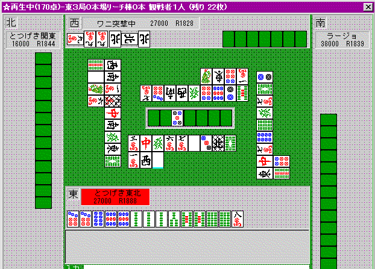
東３ともなると、「誰が上がると」「どうなるのか」がますますシビアなポイントになってきます。
この場合、トイメンがホンイツかトイトイの感じがあり、８マンはかなり厳しい勝負になります。
しかし、ここで降りても、結局トイメンが上がったら、東４では、今回トイメンが上がる以上の手を作らねばならないことになります。
「もし相手に上がられたら」・・・ほとんど３位と見ていいでしょう。
「相手に振ったら」・・・マンガンだったとしても、３．４位くらいが見込めるでしょう。
「自分が上がったら」・・・ここでリーチイーペーでも上がれば、２位くらいが取れると思われます。１シャンテンです。
確かに８ピンは薄い待ちになりますが、攻めた方が良いのでは、というのがとつの判断です。
判断そのものの結果は人によっても違うでしょうが、単純に「危険牌は切らない」とか「トップが見えるなら勝負」とか言うのではなく、こういう冷静な損得計算をすることが重要なのです。
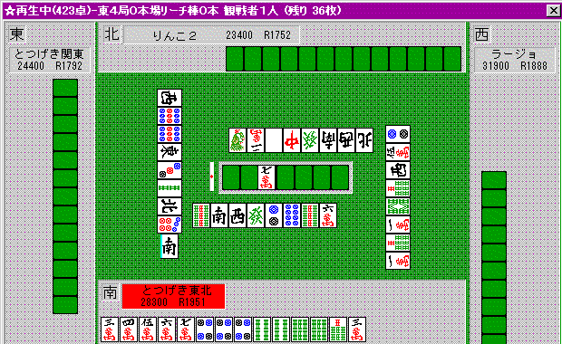
これは？
もうオーラスで、割といい形なのですが、親リーチです。
「もし相手に上がられたら」・・・親リーチなので、試合終了になる可能性が高く、トップが振ることはあまり期待できないので、たぶん３位でしょう（トップの立場で考えてみて下さい。攻めることにあまりメリットのない局面です）。
「相手に振ったら」・・・うまくすれば３位くらいですが、２位逆転はかなりつらい状況になる上、４位で終了も充分あり得ます。
「自分が上がったら」・・・トップが狙える手ですね。
この場合、ベタオリすると３位くらい。
攻めた場合、親ツモ＝３位 トイメン振り＝３位 自分振り＝４位 自分上がり＝１位となります。
私はここで勝負しました。
特別に自分が振り込むことはそれほど多いわけではなく、しかもトップが見えておりかなりの好形ですので、攻める方がいくぶん得だと判断しました。
このあたりは経験に頼る部分が多くなるわけですが、根本にこうした「計算（かなりいいかげんではあるのですが）」があることを忘れず、常にそうした意識を持つよう心がけて下さい。
ポイント４：うまく回しても安いならベタオリ・勝負手なら打ち回し
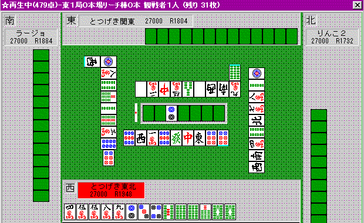
普通の、東１の平場リーチです。
リーチに対抗するなら、「２６００以上リャンメンリーチ手」でテンパイしているか、「３９００確定リャンメンリーチ手」の好形イーシャンテンくらいまでが勝負になり、他は基本的に降りる姿勢で行くべきです。
もちろん、比較的安全そうな牌を切っているうちに手替わりしたりテンパイすることもあります。
例えばこのリーチに対しての考え方の手順は次のようになります。
・仮にうまくテンパって、勝負できるか？
テンパイしても、リーチのみのカンチャンなら、追っかけなんてとてもできません。
仮にうまくテンパイしても、全然ダメダメな手の場合、「スジだから」と言って安全そうな牌を切るのではなく、完全にメンツを崩してベタオリしましょう。
攻めることに意味がないからです。
この手の場合、メンピンドラ１くらいの「追っかけ可能」な形ではありますね。
・うまくテンパイするためにはどこが不要か、またその不要部分をうまく切っていけるか？
この場合、８９マンくらいなら落としていけそうです。８マンは現物、しかも２順目に切っているので、９マン待ちもなかなかないと思います。
しかも９マンを落とせれば、手は「メンタンピンドラ１」に近づき、より一層勝負できる形になるわけですね。
７マン待ちが残ってしまえば、仮にテンパイしても勝負しにくいはずです。
仮にうまくテンパって、勝負できるか？ を考えながら、８マンをとりあえず落とします。
次に３マンなどを引いたて一歩前進したなら、９マンを切るに値するでしょう。
逆に危険牌で、しかも使えない牌を引いてくるようなら、もう少し安全に、６ソウから落とすでしょう。
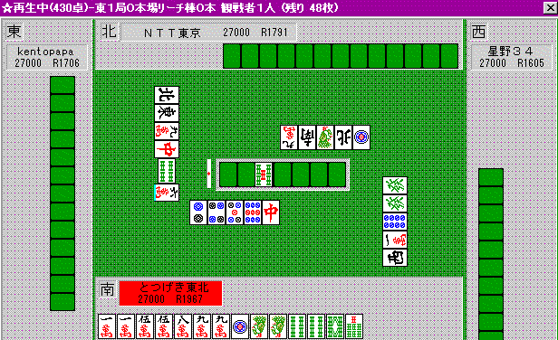
この手なら？
先ほどと同じように考えてみて下さい。
・仮にうまくテンパって、勝負できるか？
この手だと、せいぜいチートイ、最も順調に進んでチートイドラドラの単騎待ちということになります。
チートイのみなら、仮に現段階でテンパイしていたとしても、親リーチに対しては「降り」るところです。
従って、「スジだから」７ソウを切ったりするのではなく、ここは４ソウの現物を切って降りる場面なのです。
「自分が１シャンテンだから、取りあえず１枚切れのオタカゼ字牌を切っておこう」ではいけないのです。
「その手を仮に張って、勝負になるか？」をまず考えて下さい。
親リーチに対して、役なしテンパイのために、１枚切れの字牌を切ってはいけません。メンツを崩してベタオリです。
自分の手が７７００の好形１シャンテンなら、ションパイのヤクハイでさえバシバシ切って構いません。